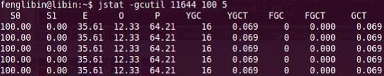

1、介绍
Jstat是JDK自带的一个轻量级小工具。全称“Java Virtual Machine statistics monitoring tool”，它位于java的bin目录下，主要利用JVM内建的指令对Java应用程序的资源和性能进行实时的命令行的监控，包括了对Heap size和垃圾回收状况的监控。可见，Jstat是轻量级的、专门针对JVM的工具，非常适用。由于JVM内存设置较大，图中百分比变化不太明显一个极强的监视VM内存工具。可以用来监视VM内存内的各种堆和非堆的大小及其内存使用量。
jstat工具特别强大，有众多的可选项，详细查看堆内各个部分的使用量，以及加载类的数量。使用时，需加上查看进程的进程id，和所选参数。
它主要是用来显示GC及PermGen相关的信息，如果对GC不怎么了解，先看这篇文章：http://blog.csdn.net/fenglibing/archive/2011/04/13/6321453.aspx，否则其中即使你会使用jstat这个命令，你也看不懂它的输出。
2、命令格式
jstat [ generalOption | outputOptions vmid [interval[s|ms] [count]] ]
3、参数说明
1）、generalOption：单个的常用的命令行选项，如-help, -options, 或 -version。
2）、outputOptions：一个或多个输出选项，由单个的statOption选项组件，可以-t, -h, and -J选项配合使用。
statOption：
-class Option
-compiler Option
-gc Option
-gccapacity Option
-gccause Option
-gcnew Option
-gcnewcapacity Option
-gcold Option
-gcoldcapacity Option
-gcpermcapacity Option
-gcutil Option
-printcompilation Option
注：其中最常用的就是-gcutil选项了，因为他能够给我们展示大致的GC信息。
Option：指的是vmid、显示间隔时间及间隔次数等
vmid — VM的进程号，即当前运行的java进程号
interval– 间隔时间，单位为秒或者毫秒
count — 打印次数，如果缺省则打印无数次
3）、jstat命令输出参数说明
S0 — Heap上的 Survivor space 0 区已使用空间的百分比
S0C：S0当前容量的大小
S0U：S0已经使用的大小
S1 — Heap上的 Survivor space 1 区已使用空间的百分比
S1C：S1当前容量的大小
S1U：S1已经使用的大小
E — Heap上的 Eden space 区已使用空间的百分比
EC：Eden space当前容量的大小
EU：Eden space已经使用的大小
O — Heap上的 Old space 区已使用空间的百分比
OC：Old space当前容量的大小
OU：Old space已经使用的大小
P — Perm space 区已使用空间的百分比
OC：Perm space当前容量的大小
OU：Perm space已经使用的大小
YGC — 从应用程序启动到采样时发生 Young GC 的次数
YGCT– 从应用程序启动到采样时 Young GC 所用的时间(单位秒)
FGC — 从应用程序启动到采样时发生 Full GC 的次数
FGCT– 从应用程序启动到采样时 Full GC 所用的时间(单位秒)
GCT — 从应用程序启动到采样时用于垃圾回收的总时间(单位秒)，它的值等于YGC+FGC
4、使用示例
示例1）、
示例2）：

图中同时打印了young gc和full gc的总次数、总耗时。而，每次young gc消耗的时间，可以用相间隔的两行YGCT相减得到。每次full gc消耗的时间，可以用相隔的两行FGCT相减得到。例如红框中表示的第一行、第二行之间发生了1次young gc，消耗的时间为0.252-0.252＝0.0秒。
常驻内存区(P)的使用率，始终停留在64.21%左右，说明常驻内存没有突变，比较正常。如果young gc和full gc能够正常发生，而且都能有效回收内存，常驻内存区变化不明显，则说明java内存释放情况正常，垃圾回收及时，java内存泄露的几率就会大大降低。但也不能说明一定没有内存泄露。
示例3）、
以上，介绍了Jstat按百分比查看gc情况的功能。其实，它还有功能，例如加载类信息统计功能、内存池信息统计功能等，那些是以绝对值的形式打印出来的，比较少用，在此就不做介绍。
示例4）、jstat -class pid:显示加载class的数量，及所占空间等信息。

示例5）、jstat -compiler pid:显示VM实时编译的数量等信息。
示例就不一一例举，有兴趣的可以自己尝试尝试。
本文出自：冯立彬的博客